# Deep Learning and Speech Data ### Will Styler - LIGN 167 <http://savethevowels.org/talks/deep_learning_speech.html> --- # Why work with speech at all? --- ### Human language is mostly speech-based - The vast majority of human languages are spoken - Many human/computer interactions work better by voice - We can speak faster and more readily than we can type - **We want our systems to be able to work with spoken language too!** --- ### What are common speech tasks? - Automatic Speech Recognition (ASR) - Spoken language to orthography - Speech Synthesis or Text-to-speech (TTS) - Orthography to spoken language - Voice or language recognition - "I don't care what they're saying, but who/what is it?" - Real-time spoken translation - "Which NLP problems do you want to have?" "Yes." --- ### These tasks are hard - ASR and TTS are fraught with thousands of complexities in the tasks - The datasets are very expensive to get and store and annotate - Speech is *amazingly* complicated - ... but we want to be good at them, *so badly* --- ### ... but they're fundamentally similar to many other deep learning tasks - Taking acoustic data as input and classifying it - ASR or Voice/Language Recognition - Taking written words as input and generating appropriate spoken data - Text-to-speech --- ### Deep Learning for speech is a rapidly changing field - Most speech work was done with HMMs for a long time - Now deep neural network approaches are taking over - Apple is [announcing Neural TTS in keynotes](https://www.theverge.com/2019/6/3/18650906/siri-new-voice-ios-13-iphone-homepod-neutral-text-to-speech-technology-natural-wwdc-2019)! - As a result... --- ### Getting into implementation is very hard - Companies are *really* guarded about their speech processing algos - The state-of-the-art is changing every day - **We're going to focus on the basic issues involved with speech classification** - ... rather than diving deep on an algorithm which will be outdated by the end of the talk --- ### Today's Plan - What is the nature of speech? - How do we discuss and display sound? - What is the nature of the speech signal? - How can we turn speech into features? - What is the training data? --- # What is the nature of speech? --- ### The Speech Process * Flapping bits of meat inside your head while blowing out air * This creates vibrations in the air you're expelling * The ear picks these up, and inteprets them as speech. * This process is studied in the Linguistic subfield of **Phonetics** --- ### The Lungs --- ### Flapping bits of meat ("articulation") 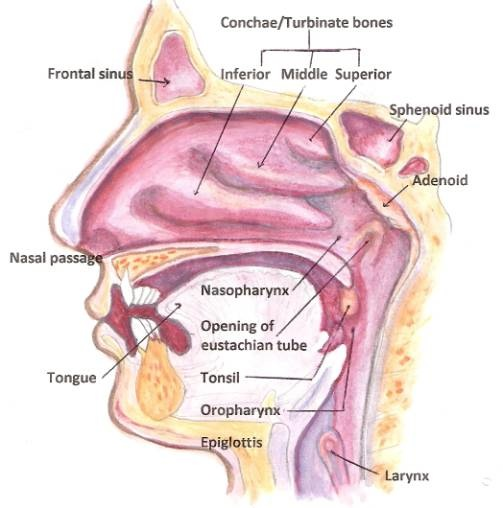 --- ### Simplified a bit... 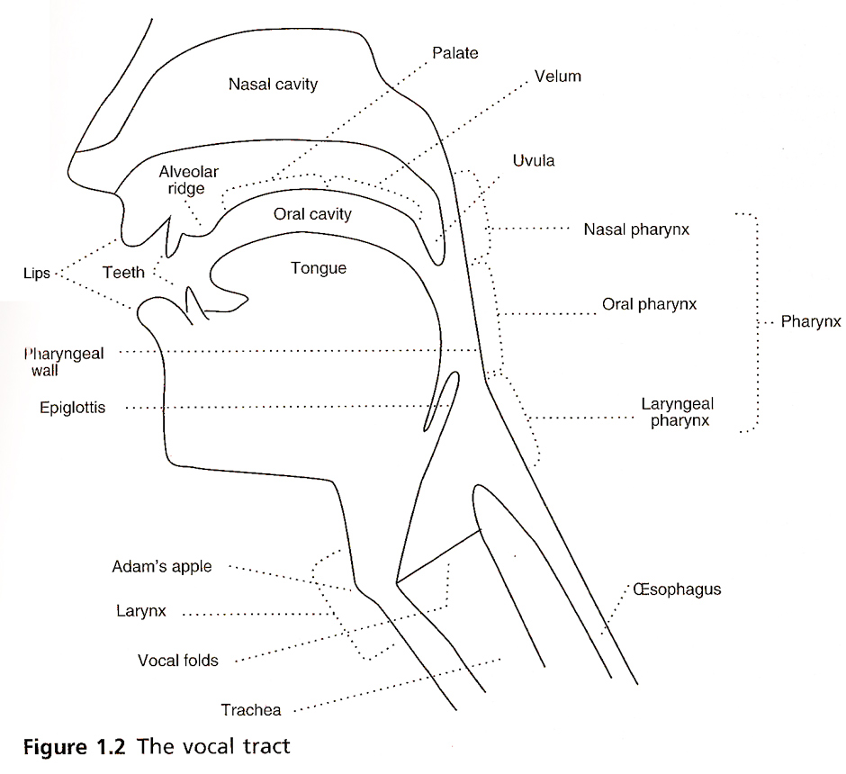 --- ### Let's do an experiment --- > The North Wind and the Sun were disputing which was the stronger, when a traveler came along wrapped in a warm cloak. --- ### Speech is absolutely insane - It's a series of fluid and overlapping gestures - It's amazingly complex - ... and it's nothing like we think it is --- ### How do we wrap our heads around it? - First, we break speech into 'segments' or 'phones' - Then, we figure out how to describe those phones and their properties - This lets us *transcribe* what was said, rather than what words were said - But first you need to realize that... --- ## Your writing system is a trainwreck - 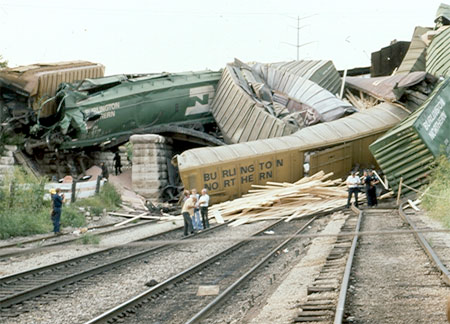 --- ### Your writing system is lying to you - Every minute of every day - "They thoroughly and roughly wrought the boughs in the borough, through and through" - C doesn't exist - TH is neither a t nor an h, and represents two different sounds - We have 15 vowels - ... and if you start thinking about letters, you're going to start struggling - Consider your writing system with the same skepticism you would normally reserve for a guy with a broken bottle walking towards you in a dark alley. --- ### For more on this, LIGN 110! --- ### We use different writing systems to capture the sounds being made - The International Phonetic Alphabet was developed by Linguists - ðə ɪntəɹ'næʃɪnəl fə'nɛtɪk 'ælfəbət wʌz də'vɛləpt baj 'lɪŋgwɪsts - ARPABET uses two character combinations to encode the sounds of *English* - AAA R P AX B EH T / Y UW Z IH Z / T UW / K EH R IH K T ER ... - **Often, TTS and ASR use these alphabets as a 'go-between'** - They're used in resources like [CMUDict](http://www.speech.cs.cmu.edu/cgi-bin/cmudict) --- ### ... but we can think about speech as a sequence of 'phones' - Individual speech sounds - A series of articulatory targets... - With hard-to-identify boundaries between them - Adjacent sounds affect each other - Which is broadcasted to the world acoustically --- # What is Sound? --- <img class="r-stretch" src="phonmedia/sound_diagram.jpg"> --- 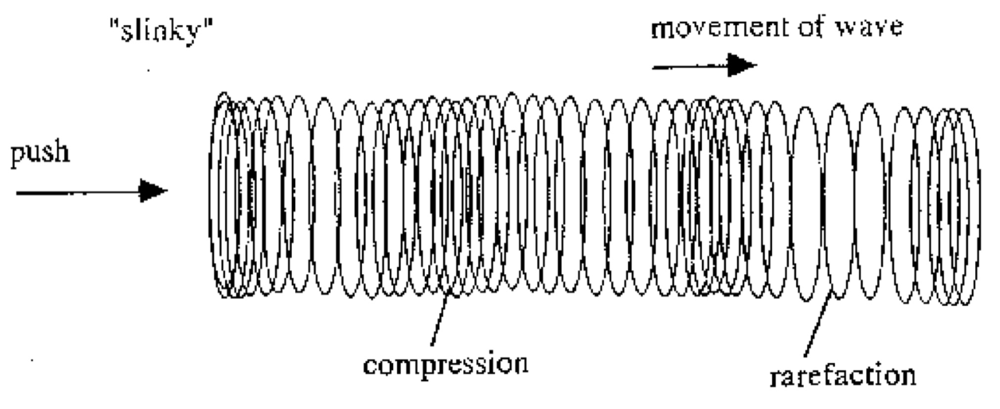 --- ### Sound is compression and rarefaction in a medium - Sound needs something to travel in (like air or water) --- ### (Yes, your childhood is a lie) --- ### Thinking of sound as waves of air compression is helpful - Why does clapping cause a sound, but waving your hand through the air doesn’t? - Why are gunshots loud? --- ### We're good at hearing sound - ... but we need to visualize it --- ### Visualizing Sound - Waveforms - Spectrograms --- ## Waveform A horizontal cut through the wave showing the peaks and troughs over time - The height/strength of the wave is called its "amplitude" <img class="r-stretch" src="phonmedia/sound_diagram.jpg"> --- 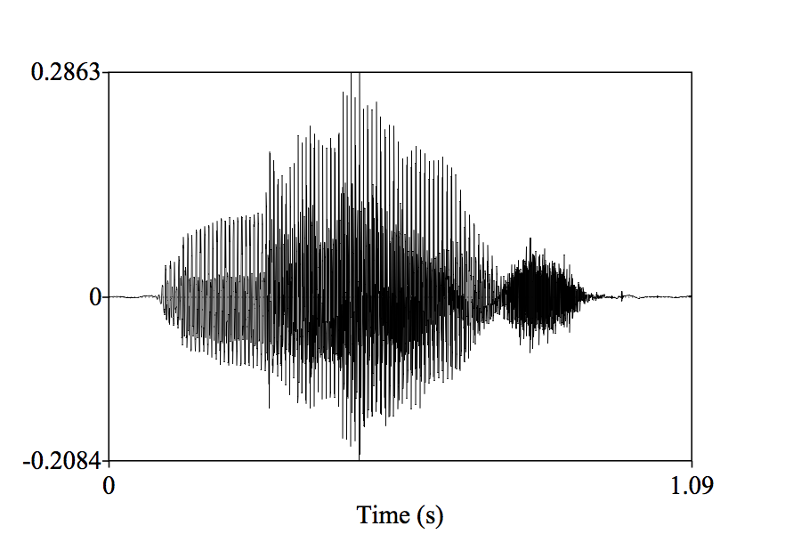<br> <audio controls> <source src="phonmedia/noise.wav" type="audio/wav"> </audio> --- ### Let's look at the sounds in this room right now --- ### Waveforms are well and good - ... and you can tell a lot from a waveform --- 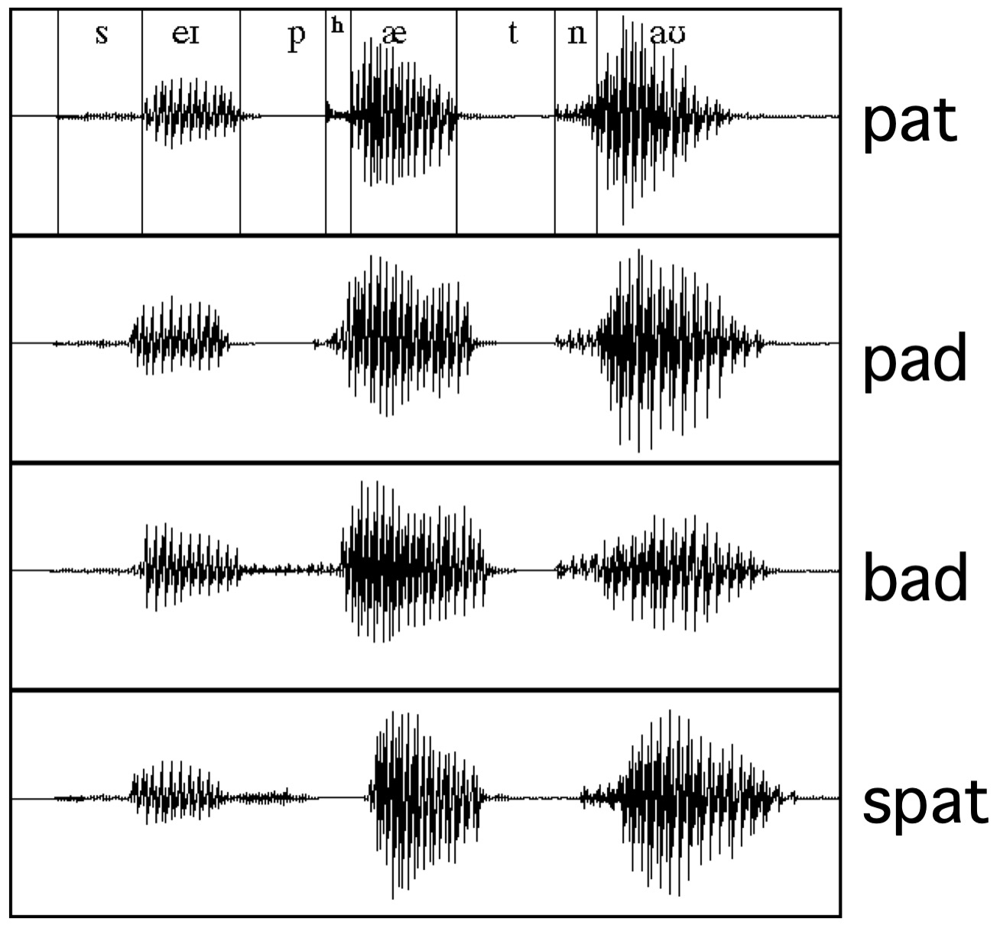 --- --- ### ... but we'll need better information to process speech --- ## Frequency The speed with which a wave oscillates - Measured in Hertz (Hz), Cycles per second <img class="r-stretch" src="phonmedia/sound_diagram.jpg"> --- ### 100 Hz - Waveform <audio controls src="phonmedia/soundw.wav"></audio> 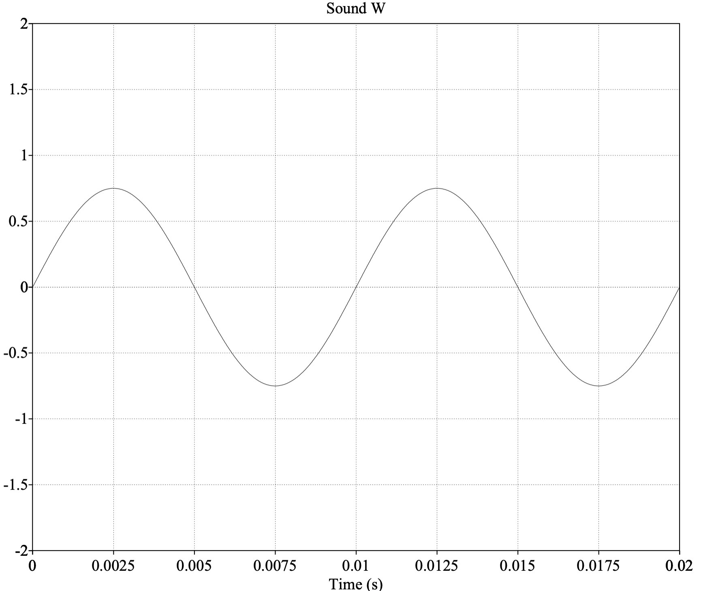 --- ### 200Hz - Waveform <audio controls src="phonmedia/200Hz.wav"></audio> <img class="r-stretch" src="phonmedia/200Hz.jpg"> --- ### Voice Pitch - Changing the "fundamental frequency" of your voice changes the perceived "pitch" of your voice - Higher frequency of vocal fold vibration == "higher pitch" - *Intonation is all about this frequency!* --- ### Frequency is important - Different phenomena produce sounds at different frequencies - Most things produce sounds with a mix of different frequencies, each at different amplitudes - Speech has *many* components at different frequencies - Each of those frequencies has a different power --- ### How do we visualize this? - Spectra only show one 'moment' of the signal --- ### "Noise" - Waveform <img width="70%" src="phonmedia/noisewaveform.jpg"><br> <audio controls src="phonmedia/noise.wav"></audio> --- ## Spectrogram Displays signal strength by frequency, over time --- ### "Noise" - Waveform <img width="70%" src="phonmedia/noisewaveform.jpg"><br> <audio controls src="phonmedia/noise.wav"></audio> --- ### "Noise" - Spectrogram 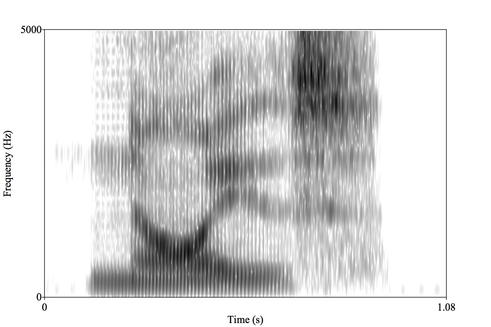<br> <audio controls src="phonmedia/noise.wav"></audio> --- ### Let's have a bit of spectrogram fun --- ### You can have fun on your own - SpectrumView on iOS - https://musiclab.chromeexperiments.com/Spectrogram/ - Praat (http://praat.org) --- # Fundamentals of Speech Acoustics --- ### Voicing <br> <audio controls src="phonmedia/noise.wav"></audio> --- ### Spectrograms show us many evenly-spaced vertical lines - These are individual glottal pulses - Higher pitched voices will have...? - More tightly spaced lines! --- ### Resonances in the mouth <br> <audio controls src="phonmedia/noise.wav"></audio> --- ### Different vowels have different resonances in the mouth - Resonances vary depending on the tongue's position - ... as well as the size and shape of the talker's head - *Different resonances from the same speaker mean different vowels* --- 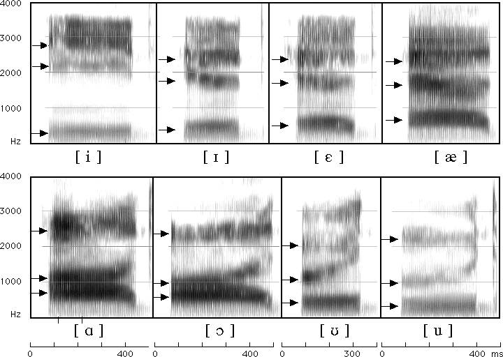 <small>Different American English vowels, as spoken by a male speaker</small> --- ### Different speakers have different resonances - This is a fundamental problem in ASR and speech perception - Enough data can help, but this is a *major* issue --- ### Other speech sounds have their own acoustics --- ### /l r w j/ act a lot like vowels 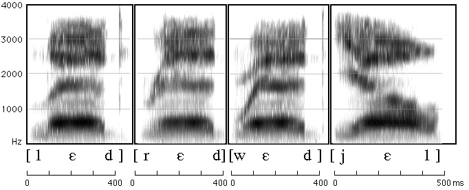 --- ### Nasals sounds look like quiet vowels 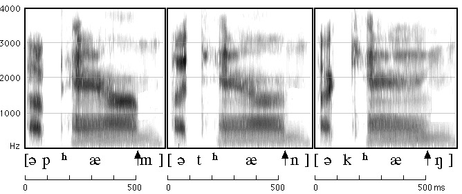 --- ### Fricative consonants have little black clouds - ... and the cloud is higher frequency as you get closer to the mouth 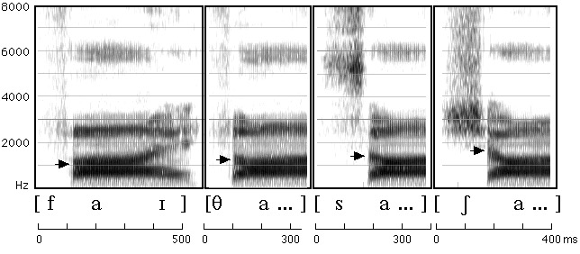 --- ### For stop consonants, the signal... stops --- ## Patterns of frequency and amplitude changes are indicative of sounds and words --- ### Cats <img class="wide" src="phonmedia/animals/cats.jpg"> --- ### Owls 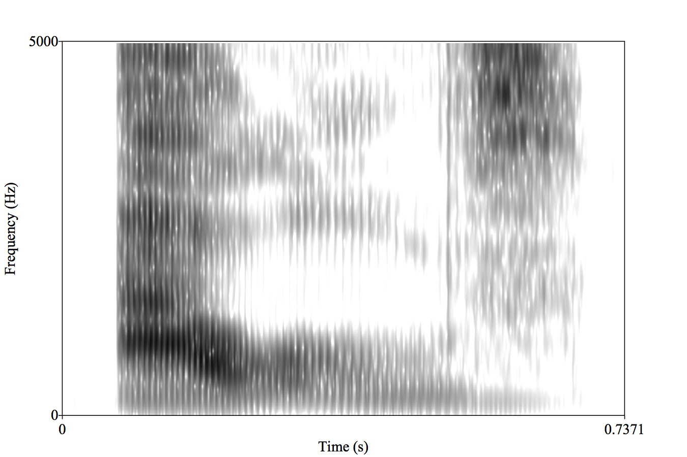 --- ### Chickadees 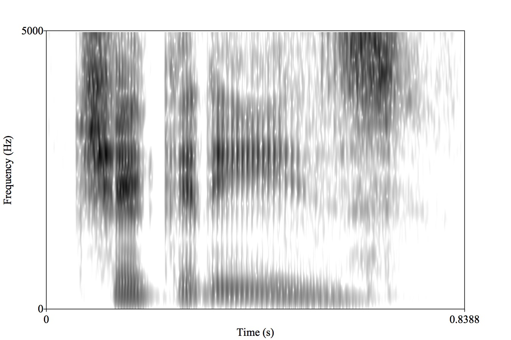 --- ### Koalas 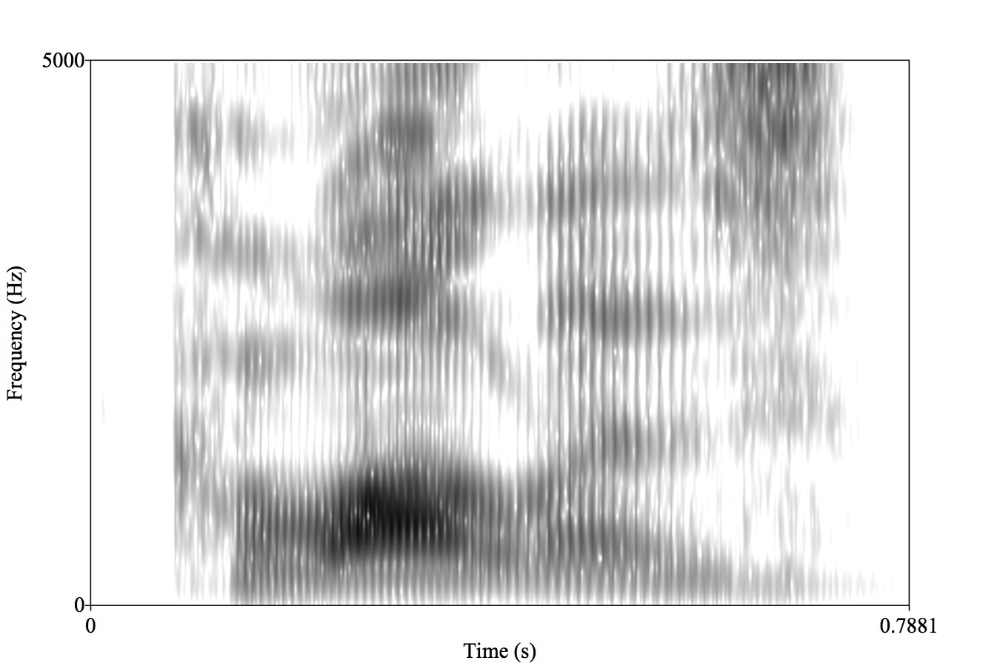 --- ### Sparrows 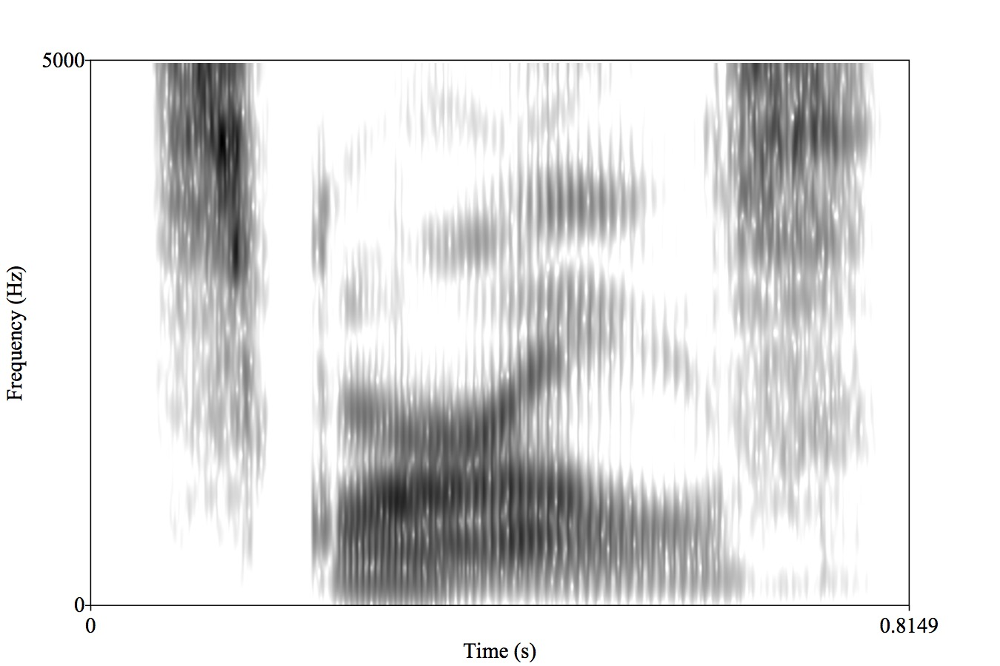 --- ### There is often no one-to-one mapping - The expression of a given gesture can have many acoustic consequences - Different speakers have different realizations of each sound - Different phones sound different in different contexts - ... but it all has to happen from this signal --- ### Representing sound as frequency, power and time is the basis of speech technology - If we don't know what words sound like, we can't teach computers what they sound like - Similar patterns are easy to confuse for humans and computers - This lets us understand a bit more about how speech technology might work --- ... but first, we need to ask an important question --- # How do we turn speech sounds into features? --- ### We've got a fundamental problem, to start --- ### Computers don't do waves <img class="r-stretch" src="phonmedia/sampling_raw.jpg"> 010001110010101000100101101010101010 --- ### Sound is analog, computers are digital - How do we deal with that? --- ### Quantization ('Sampling') 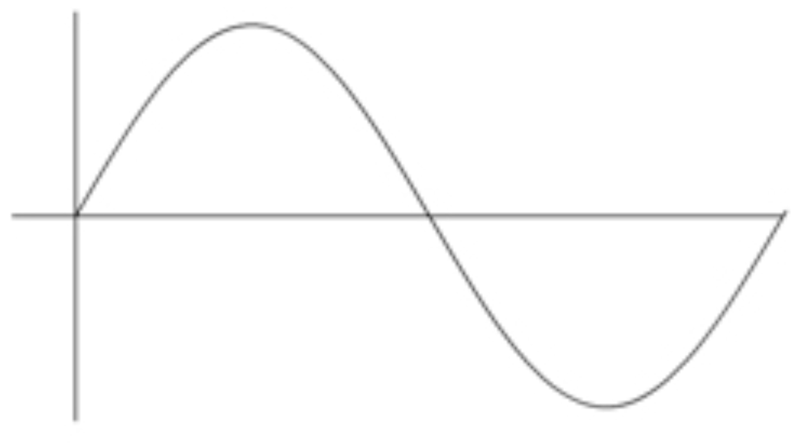 --- ### Quantization ('Sampling') 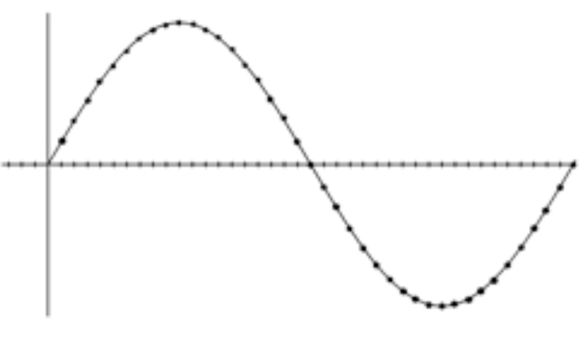 --- ### Quantization ('Sampling') 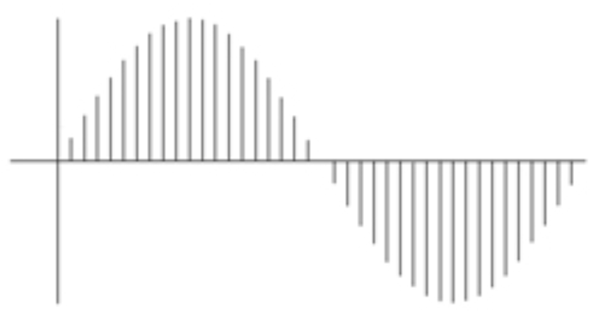 --- ### Analog-to-digital conversion - Sample the wave many times per second - Record the amplitude at each sample - The resulting series of measurements will faithfully capture the signal --- ### Relevant Parameters - The **Bit Depth** describes how many bits of information encode amplitude - 16 bit audio is the norm - The **Sampling Rate** describes how many samples per second we take - 44,100 Hz is the norm, and captures everything you need for speech --- ### AD Conversion now yields a signal that the computer can read - ... but what are the features? --- ### Putting in the waveform itself is a possibility - It's cheap and easy - [Wave2Vec](https://ai.facebook.com/blog/wav2vec-20-learning-the-structure-of-speech-from-raw-audio/) is showing amazing results doing just this! - This uses transformers to work directly on the waveform and identify 'latent speech units' - This is a very, very tantalizing possibility --- ### ... but we might want more information! - Important parts of the signal live only in frequency band info - Many approaches try to give it all the information we can - Not the same features that linguists usually use --- ### We don't need transparent or parsimonious features - Things like vowel features and pitch and other details are a pain to extract - We're plugging it into a black box - We're happy to plug in hundreds of features, if need be - We'd just as soon turn that sound into a boring matrix --- ### Let's get that algorithm a Matrix - Algorithms love Matrices --- ## Mel-Frequency Cepstral Coefficients (MFCCs) --- ### We're not going deep here - This is a lot of signal processing - We're going to teach the idea, not the practice --- ### MFCCs 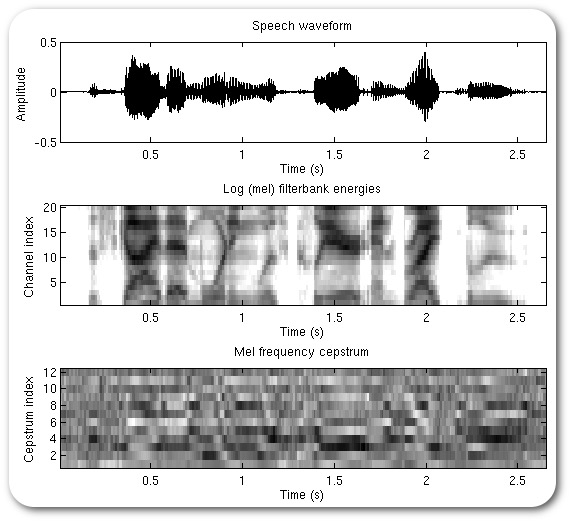 --- ### MFCC Process - 1: Create a spectrogram (effectively) - 2: Extract the most useful bands for speech (in Mels) - 3: Look at the frequencies of this banded signal (repeating the Fourier Transform process) - 4: Simplify this into a smaller number of coefficients using Discrete Cosine Transform (DCT) - Usually 12 or 13 --- ### MFCC Input <img class="r-stretch" src="phonmedia/noisewaveform.jpg"> --- ### MFCC Output 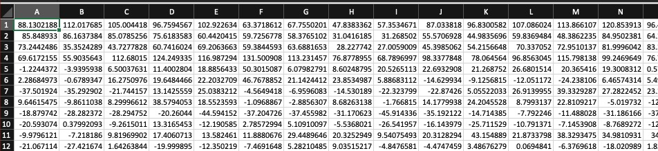 --- ### So, the sound becomes a matrix of features - Many columns (representing time during the signal) - N columns (usually 13) with coefficients which tell us the spectral shape - It's black-boxy, but we don't care. - We've created a Matrix --- 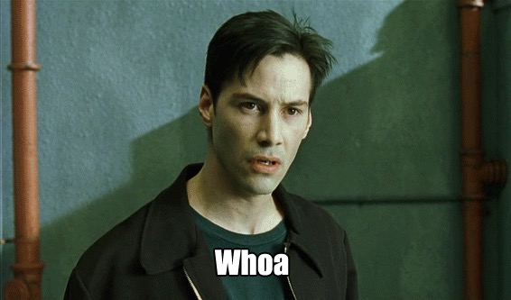 --- ### Now we've got a matrix representing the sound - MFCCs captures frequency information, according to our perceptual needs - Wav2Vec (and equivalents) go straight to vectors --- ### It's Neural Network time! 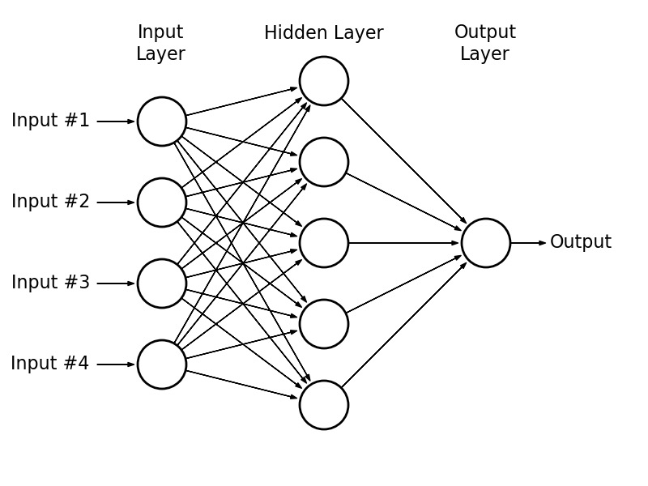 --- # What is the learning task like for ASR and TTS? --- First, one major question... - ### What units of speech are we working with? --- ### What's the desired data labeling? - We need to give the NN labeled data - [Chunk of Sound] == [Labeled Linguistic Info] - (x Many many many many tokens) - What level do we want to recognize and generate at? --- ### Possible levels of labeling - Sentences? - Words? - Phones? - Diphones? --- ### Sentences - Why are sentences a bad idea? --- ### Words "Noise" --- ### What are the pros and cons of words? --- ### Phones 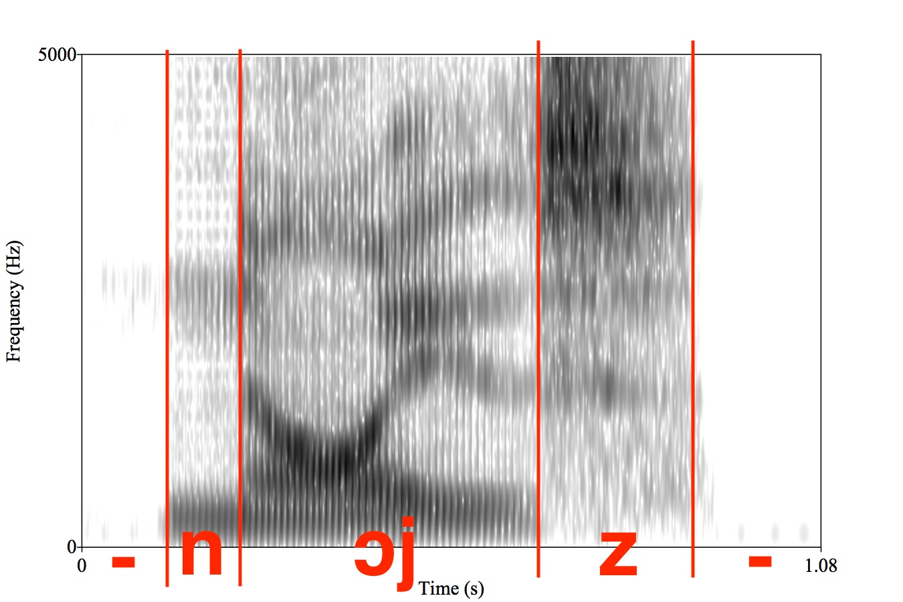 --- ### Diphones 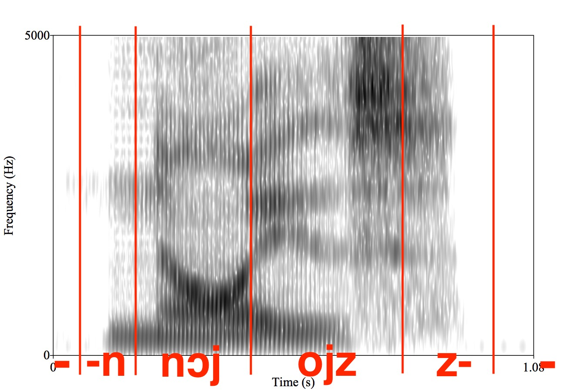 --- ### What are the pros and cons of phones and diphones? --- ### In practice, many systems use diphones - [CMU's Sphynx does](https://cmusphinx.github.io/) - As do many others - Triphones are often a possibility - Some go straight to entire words - Speech recognition systems are often kept secret --- ### So, we can now train a system - Capture sounds and annotate them as diphones - Vectorize them and feed them into a neural network as training data - We can do speech recognition, text-to-speech, and more! --- ### Using Neural Networks for ASR - Feed the vectorized sound data in and get the most likely diphone sequence back - ... or go straight to words, if you feel dangerous! --- ### Why is ASR hard? - ASR requires good dictionaries - "Bashira yeeted the Mel Frequency Cepstral Coefficients into the RNN" - ASR requires some context awareness - "Robb took a wok from the Chinese restaurant" - Dialect is always a thing - "English" is a convenient lie - ... and 99 other problems --- ### Using Neural Networks for TTS - Feed the diphone sequence in, get back a likely acoustic signal - This will generate a voice which matches (roughly) the input training voice - Style transfer is possible too! - Training the model on a generic voice - Then learning the variation associated with another as a style embedding - Then applying the variation to the model --- ### Neural Network Text-to-Speech Style Transfer Examples <audio controls src="comp/tts_squidward_ling.wav"></audio> <audio controls src="comp/tts_arnie_ling.wav"></audio> <audio controls src="comp/tts_snape_ling.wav"></audio> <audio controls src="comp/tts_clarkson_ling.wav"></audio> <audio controls src="comp/tts_gilbert_ling.wav"></audio> <audio controls src="comp/tts_optimus_ling.wav"></audio> <audio controls src="comp/tts_mario_ling.wav"></audio> --- ### Text-to-Speech is hard! - Text-to-speech requires you to understand how humans talk - "The NSA and NASA printed 1200 t-shirts for area code 303" - ... and the prosody is really hard - "Let's eat, Grandpa" - ... and 99 other problems --- ### We talk a lot more about the linguistic difficulties with these tasks in LIGN 6 'Language and Computers' <img class="r-stretch" src="img/plug.jpg"> --- ### ... and we'll talk a lot more about processing speech outside of Neural Networks in LIGN 168 'Computational Speech Processing' <img class="r-stretch" src="img/plug.jpg"> --- ### Wrapping up - Speech is movement of the articulators in the airstream - This creates sounds which vary in frequency and amplitude over time - This signal can be analyzed as a matrix of opaque cepstral features - ... and then fed into a neural network with linguistic annotations - To generate and classify human speech - So... --- ### Deep Learning works for Speech too! - It's never going to be easy - It's never going to be cheap - ... but it'll work - And it'll get you that much closer to actual human interaction! --- 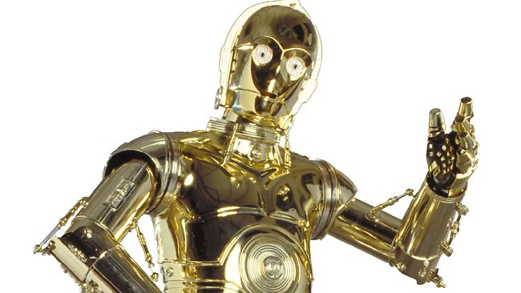 --- <huge>Thank you!</huge> <http://savethevowels.org/talks/deep_learning_speech.html>